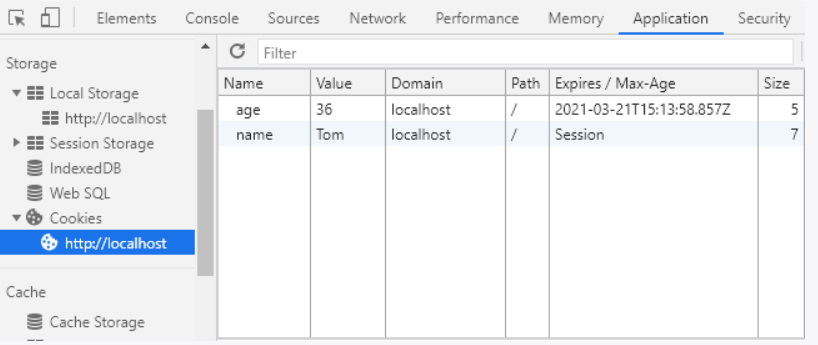

Lucrul cu cookie-uri.
Cookie-urile reprezintă mici seturi de date (nu mai mari de 4 kB),
prin care un site web poate salva pe computerul utilizatorului orice
informație. Cu ajutorul cookie-urilor se poate urmări
activitatea utilizatorului pe site: dacă este autentificat pe site
sau nu, urmărirea istoricului vizitelor sale etc.
Salvarea cookie-urilor.
Pentru a seta un cookie pe computerul utilizatorului se folosește
funcția setcookie(). Aceasta trebuie apelată înainte de a trimite
răspunsul către utilizator. Această funcție are
următoarea definiție:
|
bool setcookie(string $name, string $value, int $expire,
string $path, string $domain, bool $secure, bool
$httponly);
|
Funcția setcookie() poate primi următorii parametri:
-
name: numele cookie-ului, care va fi folosit pentru accesarea valorii
sale
-
value: valoarea sau conținutul cookie-ului - orice text alfanumeric
nu mai mare de 4 kB
-
expire (parametru opțional): perioada de valabilitate în secunde,
după care cookie-ul este distrus. Dacă acest parametru nu
este setat sau este egal cu 0, atunci distrugerea cookie-ului are loc
după închiderea browserului. De obicei se setează
relativ la timpul curent, care poate fi obținut cu ajutorul
funcției time()
-
path (parametru opțional): calea către directorul de pe server
pentru care cookie-ul va fi disponibil. Dacă se setează
"/", cookie-ul va fi disponibil pentru întregul site.
Dacă se setează, de exemplu, "/mydir/", cookie-ul va fi disponibil doar din directorul /mydir/
și toate subdirectoarele sale. Implicit, valoarea este directorul
curent în care este setat cookie-ul.
-
domain (parametru opțional): specifică domeniul pentru care
cookie-ul va fi disponibil. Dacă acesta este un domeniu de
nivelul doi, de exemplu, localhost.com, atunci cookie-ul va fi
disponibil pentru întregul site localhost.com, inclusiv pentru
subdomeniile sale de tipul blog.localhost.com. Dacă este
specificat subdomeniul blog.localhost.com, cookie-ul va fi disponibil
doar în interiorul acestui subdomeniu.
-
secure (parametru opțional): indică faptul că valoarea
cookie-ului trebuie transmisă prin protocolul HTTPS. Dacă
este setat true, cookie-ul de la client va fi transmis către server doar
dacă este stabilită o conexiune securizată. Implicit
este false.
-
httponly (parametru opțional): dacă este true, cookie-urile vor fi disponibile doar prin protocolul HTTP.
Adică, cookie-urile în acest caz nu vor fi disponibile
limbajelor de scripting, de exemplu, JavaScript. Implicit, parametrul
este false.
Salvăm cookie:
|
<?php
$name = "Tom";
$age = 36;
setcookie("name", $name);
setcookie("age", $age, time() + 3600); // perioada de valabilitate - 1 oră (3600 secunde)
echo "Cookie-urile au fost setate";
?>
|
Aici sunt setate două cookie-uri: "name" și
"age". Primul cookie este distrus după închiderea
browserului, iar al doilea - după 3600 de secunde, adică
după o oră.
Dacă este necesar, putem vedea cookie-urile salvate în
browser cu ajutorul instrumentelor de dezvoltare. De exemplu, aspectul
cookie-urilor în Google Chrome:

În cookie-uri se poate salva orice informație, dar nu este
recomandat să se salveze date importante din punct de vedere al
securității, de exemplu, parole. Iar dacă se
salvează informații importante, acestea ar trebui stocate
într-un format criptat.
Obținerea cookie-urilor.
Pentru a obține cookie-uri, se poate folosi array-ul asociativ
global $_COOKIE, de exemplu, $_COOKIE["name"]. Astfel, obținem cookie-urile salvate anterior:
|
<?php
if (isset($_COOKIE["name"])) echo "Name: " . $_COOKIE["name"] . "<br>";
if (isset($_COOKIE["age"])) echo "Age: " . $_COOKIE["age"] . "<br>";
?>
|
Salvarea array-urilor în cookie.
Salvarea array-urilor în cookie are câteva
particularități. De exemplu, salvăm următorul
array:
|
setcookie("lang[1]", "PHP");
setcookie("lang[2]", "C#");
setcookie("lang[3]", "Java");
|
Acum îl obținem și îl afișăm pe
pagină:
|
if (isset($_COOKIE["lang"])) {
foreach ($_COOKIE["lang"] as $name => $value) {
$name = htmlspecialchars($name);
$value = htmlspecialchars($value);
echo "$name. $value <br />";
}
}
|
Ștergerea cookie-urilor.
Pentru a șterge cookie-urile, este suficient să setăm
perioada de valabilitate la un timp din trecut:
|
setcookie("name", "", time() - 3600);
|